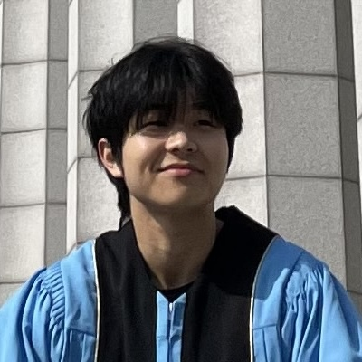
People
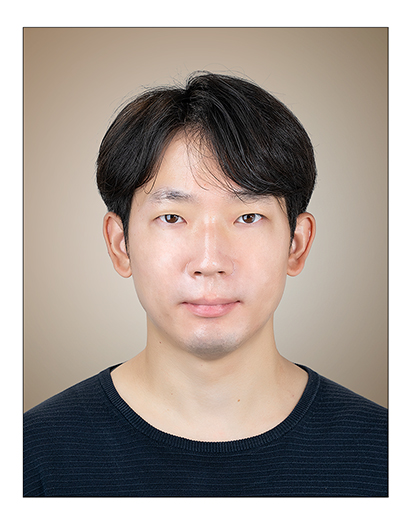
Principal investigator
Hongki Lim
Assistant Professor · Inha University
Department of Electrical and Electronic Engineering
I lead the Machine Intelligence Lab, where we study generative modeling, probabilistic inference, and inverse problems. My work connects learned priors with model-based optimization to develop principled, efficient methods for conditional generation.
Current members
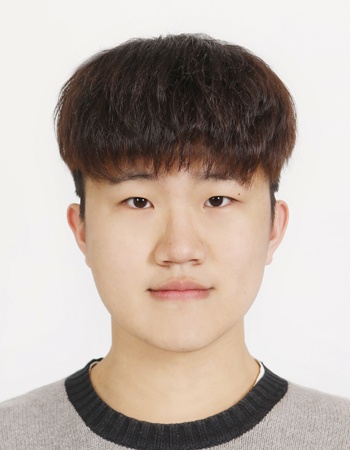
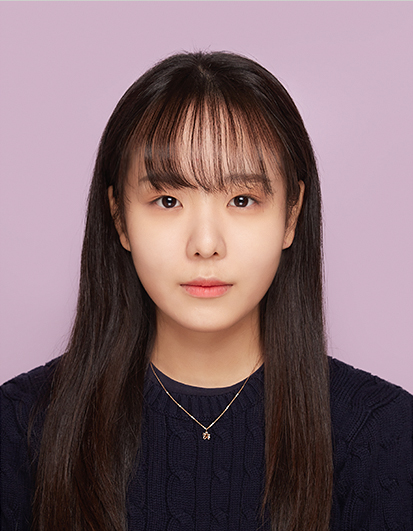
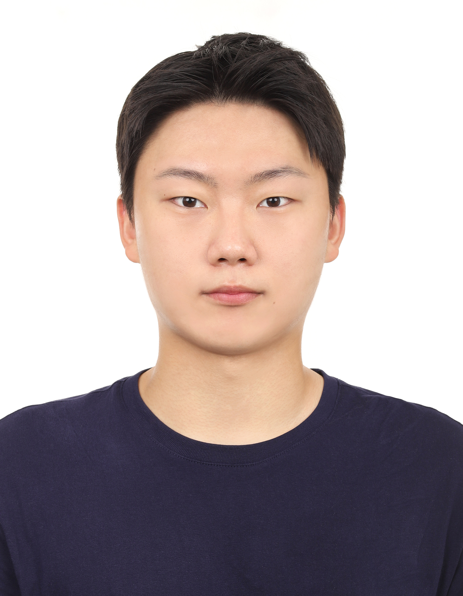
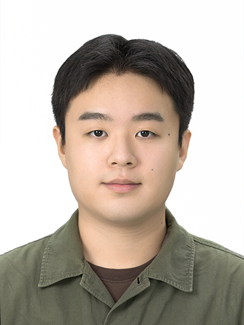
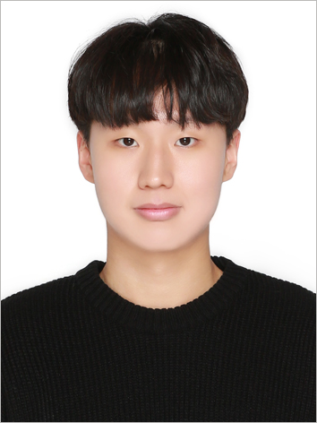
MS alumni
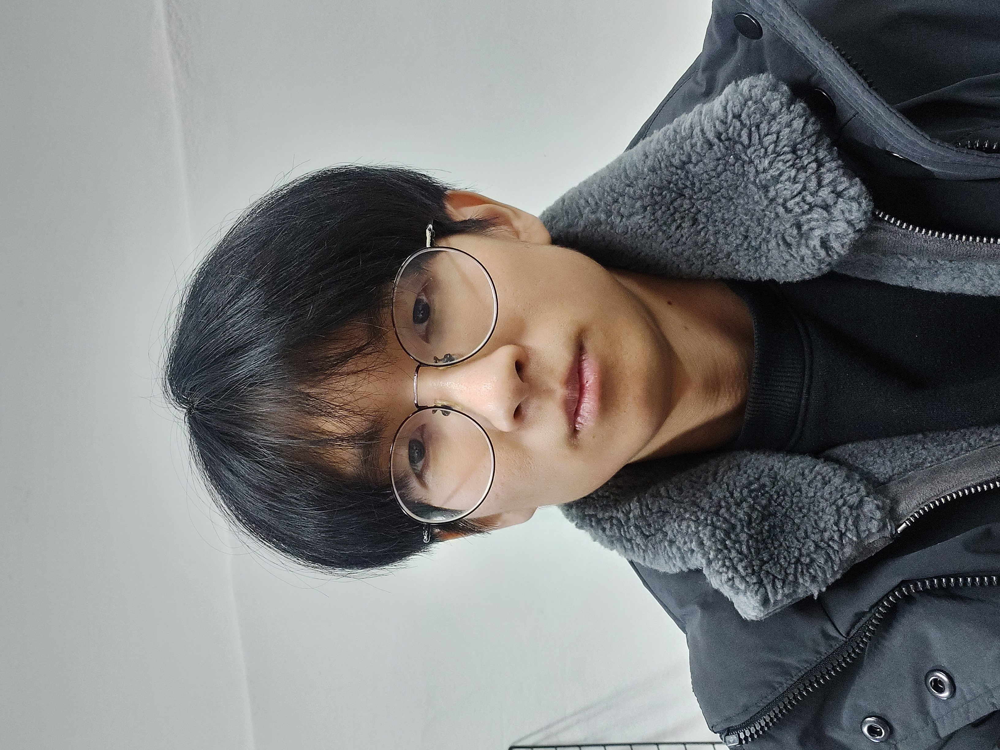
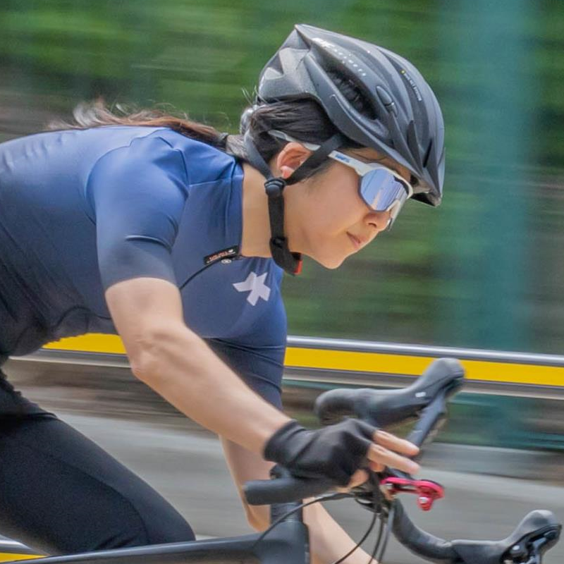
Past undergraduate researchers
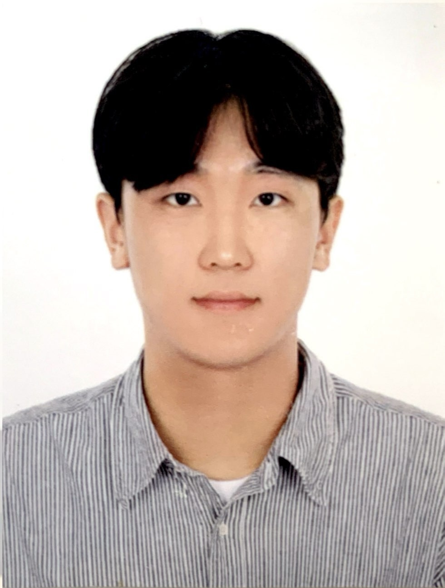
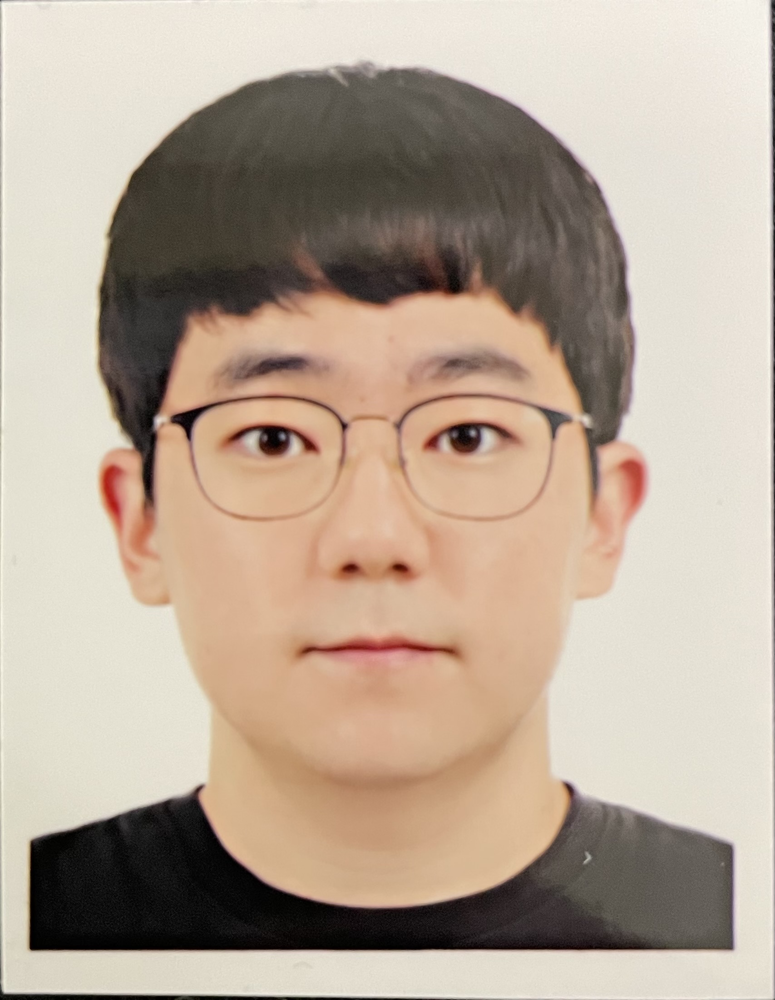
Interested in joining?
We work with each member to develop projects that fit their interests.
Get in touch ↗